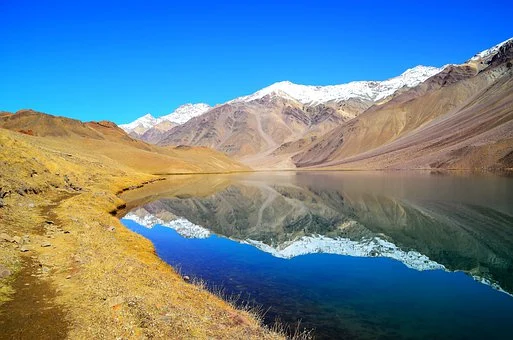
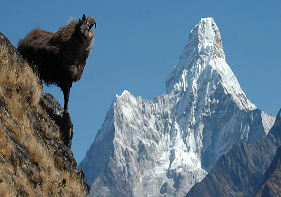
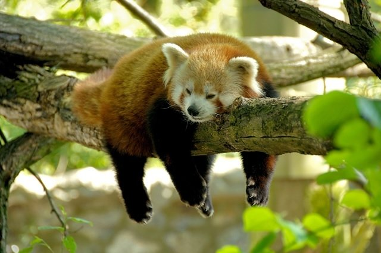

Chandra Taal lake is on the Samudra Tapu plateau, which overlooks Chandra river (a source river of the Chenab). The name of the lake originates from its crescent shape. It is at an altitude of about 4,300 metres (14,100 ft) in the Himalayas.[1] Mountains of scree overlook the lake on one side, and a cirque encloses it on the other. Chandra Taal is a tourist destination for trekkers and campers. The lake is accessible by road from Batal and by road as well as on foot from Kunzum Pass from late May to early October. The road to Chandra Taal branches off from NH-505 about 2.9 kilometres (1.8 mi) from Batal and 8 km (5.0 mi) from Kunzum Pass.[3] This 12 km (7.5 mi) motor road runs as far as a parking lot 1 kilometre (0.62 mi) from the lake. One has to travel on foot for the final 1 kilometre1 km (0.62 mi). It takes approximately two hours from Kunzum Pass to Chandra Taal. Chandra Taal is also accessible from Suraj Tal, 30 km (19 mi) awayThere are vast meadows on the banks of the lake. During springtime, these meadows are carpeted with hundreds of varieties of wild flowers.[4] In 1871, Harcourt, Assistant Commissioner of Kullu, reported that there was a plain of good grass to the north of Chadra Taal, where shepherds brought large herds for grazing from Kullu and Kangra.[5] Due to overgrazing, the grasslands are now degraded.[2] Ruddy (Brahminy) shelduck, Jun 2018 Chandra Taal is home to a few species such as the Snow Leopard, Snow Cock, Chukor, Black Ring Stilt, Kestrel, Golden Eagle, Chough, Red Fox, Himalayan Ibex, and Blue Sheep. Over time, these species have adapted to the cold arid climate, intense radiation, and oxygen deficiency by developing special physiological features. Migratory species such as the Ruddy shelduck are found in summer.[6]

Ama Dablam is a mountain in the eastern Himalayan range of Province No. 1, Nepal. The main peak is 6,812 metres (22,349 ft), the lower western peak is 6,170 metres (20,243 ft). Ama Dablam means "Mother's necklace"; the long ridges on each side like the arms of a mother (ama) protecting her child, and the hanging glacier thought of as the dablam, the traditional double-pendant containing pictures of the gods, worn by Sherpa women.[3] For several days, Ama Dablam dominates the eastern sky for anyone trekking to Mount Everest Base Camp. For its soaring ridges and steep faces Ama Dablam is sometimes referred as the "Matterhorn of the Himalayas."[4] The mountain is featured in one rupee banknote of Nepal.[5] Ama Dablam was first climbed on 13 March 1961 by Mike Gill (NZ), Barry Bishop (USA), Mike Ward (UK) and Wally Romanes (NZ) via the Southwest Ridge. They were well-acclimatised to altitude, having wintered over at 5800 metres near the base of the peak as part of the 1960–61 Silver Hut expedition, led by Sir Edmund Hillary.[6] Situated at a distance of 162 km north of the provincial capital of Biratnagar and 152 km northeast to Kathmandu, Ama Dablam is the third most popular Himalayan peak for permitted expeditions. The most popular route by far is the Southwest Ridge (right skyline in the photo).[7] Prior to a 2006 avalanche, climbers typically set up three camps along the ridge with Camp III just below and to the right of the hanging glacier, the Dablam. Any ice that calves off the glacier typically goes left, away from the camp. However, after the avalanche, climbers now prefer to set just two camps to minimize risk. A climbing permit and a liaison officer are required when attempting Ama Dablam.

The red panda (Ailurus fulgens), also known as the lesser panda, is a small mammal native to the eastern Himalayas and southwestern China. It has dense reddish-brown fur with a black belly and legs, white-lined ears, a mostly white muzzle and a ringed tail. Its head-to-body length is 51–63.5 cm (20.1–25.0 in) with a 28–48.5 cm (11.0–19.1 in) tail, and it weighs between 3.2 and 15 kg (7.1 and 33.1 lb). It is well adapted to climbing due to its flexible joints and curved semi-retractile claws. The red panda was first formally described in 1825. The two currently recognised subspecies, the Himalayan and the Chinese red panda, genetically diverged about 250,000 years ago. The red panda's place on the evolutionary tree has been debated, but modern genetic evidence places it in close affinity with raccoons, weasels, and skunks. It is not closely related to the giant panda, which is a bear, though both possess elongated wrist bones or "false thumbs" used for grasping bamboo. The evolutionary lineage of the red panda (Ailuridae) stretches back around 25 to 18 million years ago, as indicated by extinct fossil relatives found in Eurasia and North America.